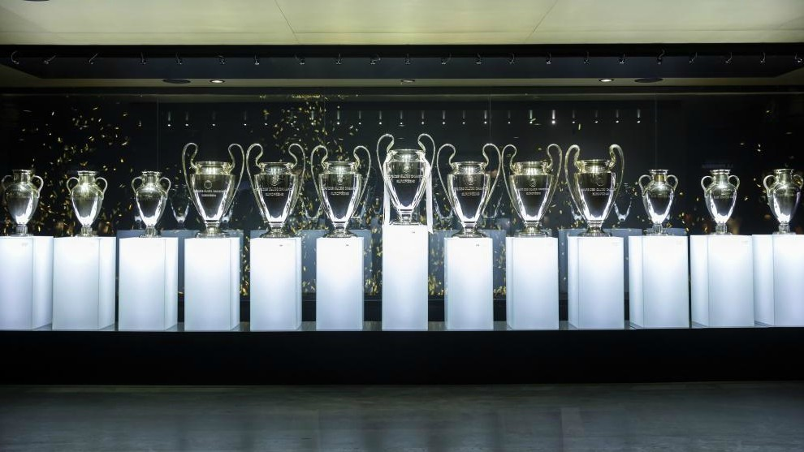

Logo del Real Madrid

Este es el escudo oficial del Real Madrid Club de Fútbol, uno de los equipos más importantes y reconocidos del mundo.
El diseño incluye las iniciales M, C y F (Madrid Club de Fútbol), una franja azul diagonal y la corona real otorgada en 1920, símbolo de su grandeza y tradición.
Cristiano Ronaldo

Cristiano Ronaldo, considerado una de las máximas leyendas del Real Madrid, celebra con la Champions League mostrando su grandeza y liderazgo en el club.
Champions del Real Madrid

El Real Madrid exhibe con orgullo sus 15 copas de la UEFA Champions League, el mayor número conseguido por un club en la historia del fútbol.
Cada trofeo representa una hazaña inolvidable y un capítulo de gloria que ha consolidado al equipo como el más grande de Europa.
Esta vitrina iluminada no solo muestra títulos, sino también la tradición, el esfuerzo y la pasión de generaciones de jugadores que han convertido al Real Madrid en un símbolo mundial de éxito y excelencia deportiva.